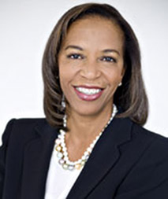

Gianna Drake Kerrison
First Vice President - Wealth Management
Chartered Retirement Planning Counselor
In today's economy, good financial advice is critical. That's why it is important to work with a dedicated Financial Advisor committed to listening to you, understanding your concerns and helping make sure all aspects of your financial life are aligned. I strive to provide advice tailored to your individual circumstances and all you'd like your wealth to achieve.
Talk to me about how I can help you embrace your financial future with confidence.